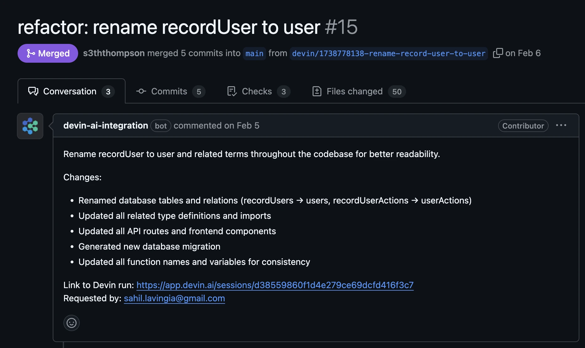

How Nubank refactors millions of lines of code to improve engineering efficiency with Devin
Overview
One of Nubank’s most critical, company-wide projects for 2023-2024 was a migration of their core ETL — an 8 year old, multi-million lines of code monolith — to sub-modules. To handle such a large refactor, their only option was a multi-year effort that distributed repetitive refactoring work across over one thousand of their engineers. With Devin, however, this changed: engineers were able to delegate Devin to handle their migrations and achieve a 12x efficiency improvement in terms of engineering hours saved, and over 20x cost savings. Among others, Data, Collections, and Risk business units verified and completed their migrations in weeks instead of months or years.
The Problem
Nubank was born into the tradition of centralized ETL FinServ architectures. To date, the monolith architecture had worked well for Nubank — it enabled the developer autonomy and flexibility that carried them through their hypergrowth phases. After 8 years, however, Nubank’s sheer volume of customer growth, as well as geographic and product expansion beyond their original credit card business, led to an entangled, behemoth ETL with countless cross-dependencies and no clear path to continuing to scale.
For Nubankers, business critical data transformations started taking increasingly long to run, with chains of dependencies as deep as 70 and insufficient formal agreements on who was responsible for maintaining what. As the company continued to grow, it became clear that the ETL would be a primary bottleneck to scale.
Nubank concluded that there was an urgent need to split up their monolithic ETL repository, amassing over 6 million lines of code, into smaller, more flexible sub-modules.
Nubank’s code migration was filled with the monotonous, repetitive work that engineers dread. Moving each data class implementation from one architecture to another while tracing imports correctly, performing multiple delicate refactoring steps, and accounting for any number of edge cases was highly tedious, even to do just once or twice. At Nubank’s scale, however, the total migration scope involved more than 1,000 engineers moving ~100,000 data class implementations over an expected timeline of 18 months.
In a world where engineering resources are scarce, such large-scale migrations and modernizations become massively expensive, time-consuming projects that distract from any engineering team’s core mission: building better products for customers. Unfortunately, this is the reality for many of the world’s largest organizations.
The Decision: an army of Devins to tackle subtasks in parallel
At project outset in 2023, Nubank had no choice but to rely on their engineers to perform code changes manually. Migrating one data class was a highly discretionary task, with multiple variations, edge cases, and ad hoc decision-making — far too complex to be scriptable, but high-volume enough to be a significant manual effort.
Within weeks of Devin’s launch, Nubank identified a clear opportunity to accelerate their refactor at a fraction of the engineering hours. Migration or large refactoring tasks are often fantastic projects for Devin: after investing a small, fixed cost to teach Devin how to approach sub-tasks, Devin can go and complete the migration autonomously. A human is kept in the loop just to manage the project and approve Devin’s changes.
The Solution: Custom ETL Migration Devin
A task of this magnitude, with the vast number of variations that it had, was a ripe opportunity for fine-tuning. The Nubank team helped to collect examples of previous migrations their engineers had done manually, some of which were fed to Devin for fine-tuning. The rest were used to create a benchmark evaluation set. Against this evaluation set, we observed a doubling of Devin’s task completion scores after fine-tuning, as well as a 4x improvement in task speed. Roughly 40 minutes per sub-task dropped to 10, which made the whole migration start to look much cheaper and less time-consuming, allowing the company to devote more energy to new business and new value creation instead.
Devin contributed to its own speed improvements by building itself classical tools and scripts it would later use on the most common, mechanical components of the migration. For instance, detecting the country extension of a data class (either ‘br’, ‘co’, or ‘mx’) based on its file path was a few-step process for each sub-task. Devin’s script automatically turned this into a single step executable — improvements from which added up immensely across all tens of thousands of sub-tasks.
There is also a compounding advantage on Devin’s learning. In the first weeks, it was common to see outstanding errors to fix, or small things Devin wasn’t sure how to solve. But as Devin saw more examples and gained familiarity with the task, it started to avoid rabbit holes more often and find faster solutions to previously-seen errors and edge cases. Much like a human engineer, we observed obvious speed and reliability improvements with every day Devin worked on the migration.
“Devin provided an easy way to reduce the number of engineering hours for the migration, in a way that was more stable and less prone to human error. Rather than engineers having to work across several files and complete an entire migration task 100%, they could just review Devin’s changes, make minor adjustments, then merge their PR”
Jose Carlos Castro, Senior Product Manager
How Devin Became Gumroad's #1 Contributor with 1,500+ Merged PRs

About the company
Gumroad is an e-commerce platform that empowers creators to engage and sell products directly to their supporters. It was founded by Sahil Lavingia in 2011. Since then, Gumroad has developed multiple products like Flexile and Iffy that enable creators and founders to do more.
Overview
Gumroad was founded in 2011 to help creators sell digital products directly to their audiences. The team piloted Devin with one engineering pod in December 2024 and expanded it across the entire company – both technical and non-technical teams – within weeks.
Today, Devin lives in Slack and GitHub as a shared teammate, turning ideas and tickets into ready-to-merge pull requests around the clock.
“The best feeling was Devin working during my commute. Build was failing in Flexile production so I went to Slack on my phone, and tagged Devin to fix the failing build. I biked over to the office, saw build was passing so I just merged the fix. It worked perfectly.”
Raul Popadineți, Senior Software Engineer, Flexile
How Gumroad Uses Devin
Devin is an integral part of Gumroad’s workflow support members of the engineering, product, customer support and marketing teams:
- Engineering delegates bug fixes, configuration changes, version upgrades, make significant product changes like updating onboarding, and more
- Support investigates bugs and starts a first-pass fix
- Marketing independently ships changes to the marketing site without needing to wait for an engineer
| Team | Typical Devin Task | Impact |
|---|---|---|
| Engineering | Fix a flaky test or build failure, upgrade Ruby version, or complete a 50-file refactor | Engineers stay focused on deep work while Devin handles the shadow dev work |
| Product | Scaffold new moderation feature | Turns loose notes into a live backlog |
| Support | Investigate a user-reported bug (ticket report provided to Devin), identify relevant parts of the codebase (with Ask Devin) and create a draft fix | Cuts escalation time, shields engineers from triage and warms up the fix |
| Marketing | Swap hero copy on the main website or Gumroad Discover page | Ships site changes without distracting engineers |
“I used to keep feature ideas in my Apple Notes. Now I DM them to Devin and those ideas come back as draft PRs”
– Seth Thompson, Software Engineer, Iffy
How Devin works across Gumroad teams – from engineering to support
Timeline
- Nov 2024: a handful of engineers tested Devin.
- Dec 2024: the Gumroad Team account was connected to all key repositories and access was quickly rolled out across Engineering, Product, Support and more. Pooled credits and no seat-based limits meant anyone could start working with Devin via Slack and GitHub.
Within weeks, Devin became a top contributor to Gumroad repositories. After 4 months, Devin merged 1,583 PRs with an >85% merge rate, ranking #1 contributor on repos like anti-work/gumroad, antiwork/flexile, and antiwork/gum.new.
Shipping the Gumroad Helper bot
Gumroad was inspired by Devin’s Slack integration and built their own Helper bot. Devin not only served as the muse, but was critical in delivering the project. Devin merged 75 PRs for this project, building smaller features like adding a keyboard shortcut to the reply button, as well as taking a first-pass at several of the Helper’s key features including assign to AI and changing how the knowledge bank works. The project would have taken several weeks to deliver without Devin executing these tasks in the background while the engineers worked on the next set of more complex tasks.
Turning ideas to PRs
Seth, the sole developer on Gumroad’s new content moderation tool Iffy, used to capture feature ideas in notes that often remained untouched or landed in a long ticket backlog. Now, he sends those ideas directly to Devin to turn them into a draft PR. Even if Devin simply opened a blank or early draft PR, this new workflow encourages Seth to finish the work, effectively becoming his new to do list.
For Iffy’s team-of-one, Devin provided significant leverage – helping to iterate on new features, managing configuration changes and even making a change to ~2,500 lines of code.

Handing off the technical busywork to Devin
“From the engineering perspective, it’s much easier to work from a starting point. The task has already been warmed up and you can either have Devin close the loop or you can take it over the finish line.”
– Raul Popadineți, Senior Software Engineer, Flexile
Raul, working on Flexile – Gumroad’s payroll and equity system for contractors – leverages Devin for a variety of rote tasks, from removing unnecessary code to fixing build failures (notably, Devin fixed a failing build in Flexile’s production environment while Raul was commuting to the office). This allows him to work on other priority projects while Devin handles general code maintenance.
Devin has also taken on tasks members of the marketing and support teams would usually escalate to engineering. Maddie from Marketing regularly makes updates to the website and simply kicks off a Devin session to complete tasks like copy changes. For Andie in Support, Devin is the default assistant when investigating user-reported bugs. In one support case, Devin was provided with the support ticket in the prompt and found an underlying currency conversion bug that broke their refund process. Devin helped pinpoint the exact issue and part of the code and proposed a draft resolution.
Gumroad's Advice to teams onboarding Devin
- Onboard Devin like a real teammate. Feed it architecture docs and style guides up front.
- Give plain-language feedback. Devin explains its reasoning and adjusts.
- Keep it in Slack. Especially if your team is very Slack-centric. Fast hand-offs keep momentum high.
- Chunk the work. Smaller scopes use fewer ACUs (credits) and land cleaner PRs.
Ready to clear your backlog?
Start working with Devin today – sign up for the Core or Team plan. Plug Devin into Slack and GitHub; watch ideas turn into merged PRs before lunch.